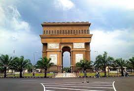

Kota Kediri
Kota ini terletak sekitar 130 km sebelah Barat Daya Kota Surabaya dan merupakan kota terbesar ketiga di provinsi Jawa Timur setelah Kota Surabaya dan Kota Malang menurut jumlah penduduk. Kota Kediri merupakan kota tertua yang ada di Jawa Timur. Kota Kediri memiliki luas wilayah 63,40 km² dan seluruh wilayahnya merupakan enklave dari Kabupaten Kediri. Kota Kediri terbelah oleh Sungai Brantas yang membujur dari Selatan ke Utara sepanjang 7 kilometer. Penduduk kota ini berjumlah 287.962 jiwa
Makanan Khas
Stik Tahu
Kota Kediri
dijuluki sebagai Kota Tahu. Banyak pedagang menjual tahu berkualitas di kota ini. Stik tahu salah satu hasil olahan dari produk tahu.
Tahu Takwa
Ketika anda berkunjung ke Kediri tidak lupa membeli tahu takwa. Tahu ini berbentuk persegi, berwarna kuning, dan teksturnya padat. Warna kuning dari tahu ini menggunakan kunyit sebagai pewarna alami. Ketika digoreng tekstur tahu takwa lebih lembut dan kenyal. Anda bisa membeli tahu takwa untuk lauk makan dan camilan.
Gethuk Pisang
Getuk pisang khas Kediri menggunakan pisang raja nangka. Bahan getuk dari pisang raja nangka ini memiliki rasa khas dan teksturnya sesuai untuk membuat getuk. Anda bisa membeli getuk pisang untuk oleh-oleh. Getuk ini dapat bertahan selama seminggu dalam kulkas.
Sambal Tumpang
Kota Kediri dikenal dengan nasi pecel sambal tumpang. Ciri khas dari makanan ini adalah sambalnya. Tempe busuk atau tempe bosok digunakan sebagai bahan membuat sambal. Selain tempe, bumbu yang dipakai membuat sambal ada bawang putih, cabai, bawang merah, dan bumbu pelengkap lain.
Gunung Klotok
Gunung Klotok merupakan gunung yang berada di ketinggian 536 mdpl. Meskipun tidak terlalu tinggi, namun Anda pasti akan tertegun dengan keindahan yang dimilikinya. Untuk mendaki gunung ini dibutuhkan waktu 2 hingga 3 jam.
Kebun Bunga Matahari
Di Kediri ada tempat wisata bernama Kebun Bunga Matahari yang sedang hits. Di lahan yang luasnya sekitar 900 meter ini ditumbuhi bunga matahari yang begitu cantik. Selain bisa puas mengambil foto yang cantik, pengunjung juga bisa membeli buah labu yang banyak dijual oleh warga sekitar. Kebun Bunga Matahari ini menjadi destinasi yang tak boleh dilewatkan.
Simpang Lima Gumul

Mengunjungi kota Kediri tak lengkap rasanya tidak mengunjungi ikon kota ini. Bangunan Monumen Simpang Lima Gumul ini memiliki daya tarik tersendiri karena mirip dengan La’arch De Triomphe yang berada di Perancis. Di Bangunan kokoh ini terdapat juga relief yang menceritakan masyarakat Kediri zaman dahulu. Hingga kini bangunan ini begitu hits dan bisa dijadikan tempat untuk berburu foto foto yang keren. Selain itu juga bisa sekalian bersantai bersama keluarga.
Air Terjun Dolo
Jika Anda belum puas untuk melihat air terjun, Kediri masih memiliki air terjun yang tak kalah menarik untuk dikunjungi. Air terjun Dolo menawarkan pesona yang luar biasa, dengan suasana yang begitu menyejukkan. Mengingat air terjun ini berada di lereng Gunung Wilis dengan ketinggian sekitar 125 meter. Untuk bisa menyaksikan keindahannya, Anda harus lebih dahulu melakukan trekking 1 km dengan hutan pinus yang menyejukkan.